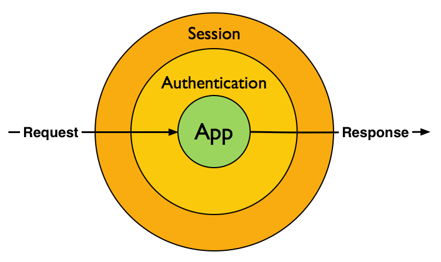

Explorando o Poder dos Middlewares
Daniel Gimenes
- 7+ anos trabalhando com PHP
- 2+ anos usando middlewares
- Engenheiro de Software na Maestrooo
- Cursando Sistemas de Informação na UNISAL
- Zend Framework ❤
Problemas
- Tratamento de erros
- Roteamento
- Autenticação
- Controle de acesso
- Prevenção contra ataques
- Validação de entrada
- Tratamento de saída
- Controle de sessão
- Cache HTTP
- Log de acessos
- Negociação de conteúdo
- ...
Reutilização de código!
Protocolo HTTP
- Requisição e resposta
- Camada comum
Reutilização de código na camada HTTP
HTTP Request no PHP
- $_GET
- $_POST
- $_SERVER
- $_FILES
- $_COOKIES
- fopen('php://input');
HTTP Response no PHP
header('HTTP/1.1 404 Not Found');
header('Content-type: text/html');
echo 'Not found';
Problemas
- Estado global
- Efeitos colaterais
- Dificil de debugar
- Dificil de testar
Abstrações
- Aura\Http
- Illuminate\Http
- React\Http
- Respect\Rest
- Symfony\HttpFoundation
- Zend\Http
- ...
Reutilização de código na camada HTTP

HttpKernelInterface
namespace Symfony\Component\HttpKernel;
use Symfony\Component\HttpFoundation\Request;
use Symfony\Component\HttpFoundation\Response;
interface HttpKernelInterface
{
public function handle(Request $request): Response;
}
Filosofia Unix
Middleware
Seus problemas acabaram!
- Implementar a HttpKernelInterface
- Receber o próximo pelo construtor
- Chamar o próximo
Interoperabilidade?
PSR-7
- Psr\Http\Message\MessageInterface
- Psr\Http\Message\RequestInterface
- Psr\Http\Message\ServerRequestInterface
- Psr\Http\Message\ResponseInterface
- Psr\Http\Message\StreamInterface
- Psr\Http\Message\UriInterface
- Psr\Http\Message\UploadedFileInterface
Assinaturas de middlewares
function (ServerRequestInterface $request): ResponseInterface
function (
ServerRequestInterface $request,
ResponseInterface $response
): ResponseInterface
function (
ServerRequestInterface $request,
ResponseInterface $response,
callable $next
): ResponseInterface
PSR-15
namespace Psr\Http\ServerMiddleware;
use Psr\Http\Message\ResponseInterface;
use Psr\Http\Message\ServerRequestInterface;
interface MiddlewareInterface
{
public function process(
ServerRequestInterface $request,
DelegateInterface $delegate
): ResponseInterface;
}
namespace Psr\Http\ServerMiddleware;
use Psr\Http\Message\ResponseInterface;
use Psr\Http\Message\ServerRequestInterface;
interface DelegateInterface
{
public function process(
ServerRequestInterface $request
): ResponseInterface;
}
Por que single-pass?
$a = function ($request, $response, $next) {
$response = $response->withHeader('X-Foo', 'foo');
return $next(
$request->withAttribute('yay', 'woo'),
$response
);
};
$b = function ($request, $response, $next) {
$yay = $request->getAttribute('yay'); // woo
return new Response();
}
$a(new Request(), new Response(), $b); // fail :(
Agora sim!
Zend Expressive 2
Bootstrap
require __DIR__ . '/../vendor/autoload.php';
$container = require __DIR__ . '/../config/container.php';
$app = $container->get(Application::class);
$app->pipe(ErrorHandler::class);
$app->pipe(Session::class);
$app->pipe(Authentication::class);
$app->pipeRoutingMiddleware();
$app->pipe(Authorization::class);
$app->pipe(InputValidation::class);
$app->pipeDispatchMiddleware();
$app->pipe(NotFoundHandler::class);
$app->run();
Imutabilidade
// ...Bootstrap $app
$before = serialize($app);
$app->run();
$after = serialize($app);
$this->assertSame($before, $after);
Eliminando o overhead com FastCGI
use PHPFastCGI\FastCGIDaemon\ApplicationFactory;
use PHPFastCGI\Adapter\Expressive\ApplicationWrapper;
// ...Bootstrap $app
// Create the kernel for FastCGIDaemon (from Expressive app)
$kernel = new ApplicationWrapper($app);
// Create the symfony console application
$daemon = (new ApplicationFactory)->createApplication($kernel);
// Run the symfony console application
$daemon->run();
Tratamento de erros
class ErrorHandler implements MiddlewareInterface
{
public function process($request, $delegate)
{
try {
return $delegate->process($request);
} catch (Throwable $e) {
return $this->createErrorResponse($request, $e);
}
}
}
Sessão
class Session implements MiddlewareInterface
{
public function process($request, $delegate)
{
$session = Session::fromRequest($request);
$response = $delegate->process(
$request->withAttribute('session', $session)
);
return $session->writeToResponse($response);
}
}
OAuth 2
class OAuth implements MiddlewareInterface
{
public function process($request, $delegate)
{
$user = $this->oAuthService->authenticate($request);
return $delegate->process(
$request->withAttribute('user', $user)
);
}
}
Roteamento
class Router implements MiddlewareInterface
{
public function process($request, $delegate)
{
$matchedRoute = $this->router->match($request);
return $delegate->process(
$request->withAttribute('route', $matchedRoute)
);
}
}
Autorização
class Authorization implements MiddlewareInterface
{
public function process($request, $delegate)
{
$user = $request->getAttribtue('user');
$route = $request->getAttribtue('route');
$isAuthorized = $this->isAuthorized($user, $route);
if ($isAuthorized) {
return $delegate->process($request);
}
return $this->createUnauthorizedResponse($user, $route);
}
}
Decodificação de JSON
class JsonParser implements MiddlewareInterface
{
public function process($request, $delegate)
{
$body = (string) $request->getBody();
$data = json_decode($body, true);
return $delegate->process(
$request->withParsedBody($data)
);
}
}
Validação de entrada
class JsonSchemaValidator implements MiddlewareInterface
{
public function process($request, $delegate)
{
$validator = new JsonSchema\Validator();
$data = $request->getParsedBody();
$validator->validate($data, '/my/schema.json');
if ($validator->isValid()) {
return $delegate->process($request);
}
return $this->createErrorResponse($validator);
}
Dispatch
class DispatchMiddleware implements MiddlewareInterface
{
public function process($request, $delegate)
{
$routeResult = $request->getAttribute(RouteResult::class);
if (null === $routeResult) {
return $delegate->process($request);
}
$middleware = $routeResult->getMatchedMiddleware();
return $middleware->process($request, $delegate);
}
}
Aplicação
Not Found
class NotFoundHandler implements MiddlewareInterface
{
public function process($request, $delegate)
{
return new Response(404);
}
}
Outros projetos interessantes
- https://github.com/oscarotero/psr7-middlewares
- https://github.com/middlewares/awesome-psr15-middlewares
Perguntas?
Obrigado!
Daniel Gimenes
Twitter: @Danizord
Github: @Danizord
Feedback: https://joind.in/talk/1bca0